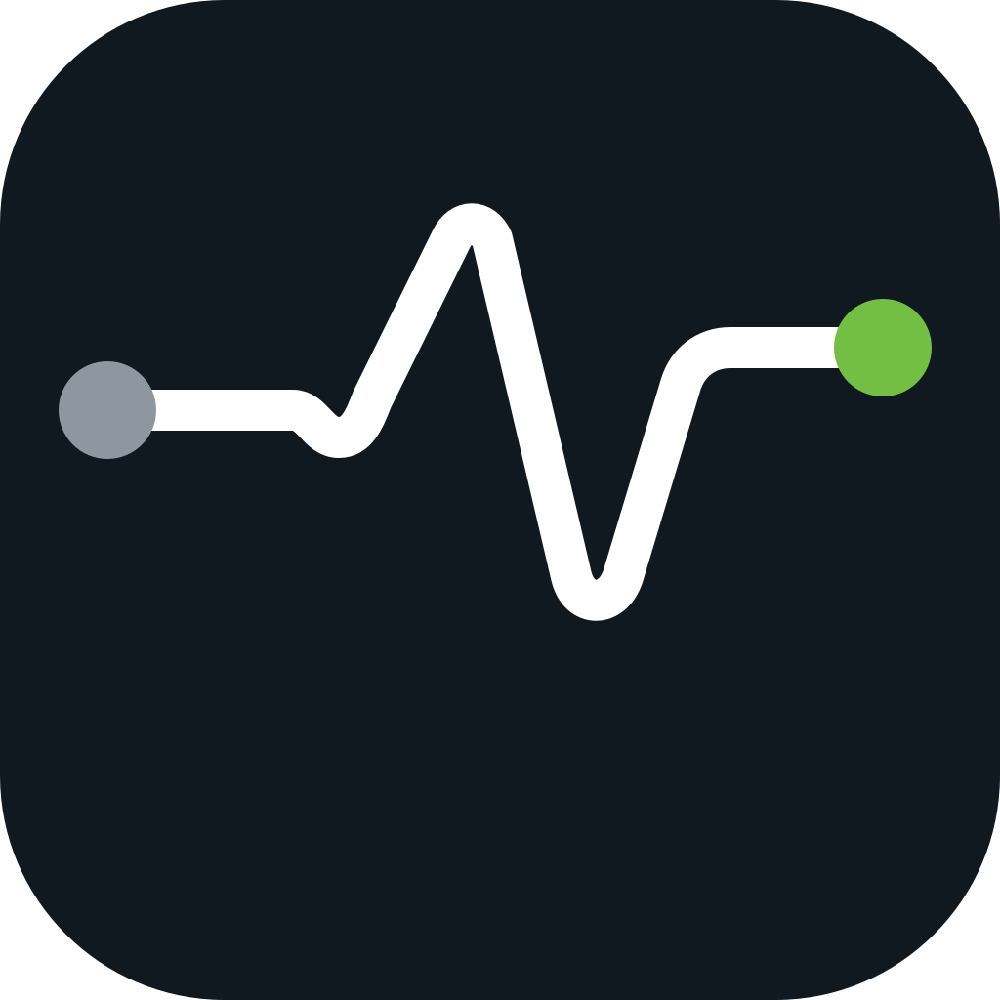
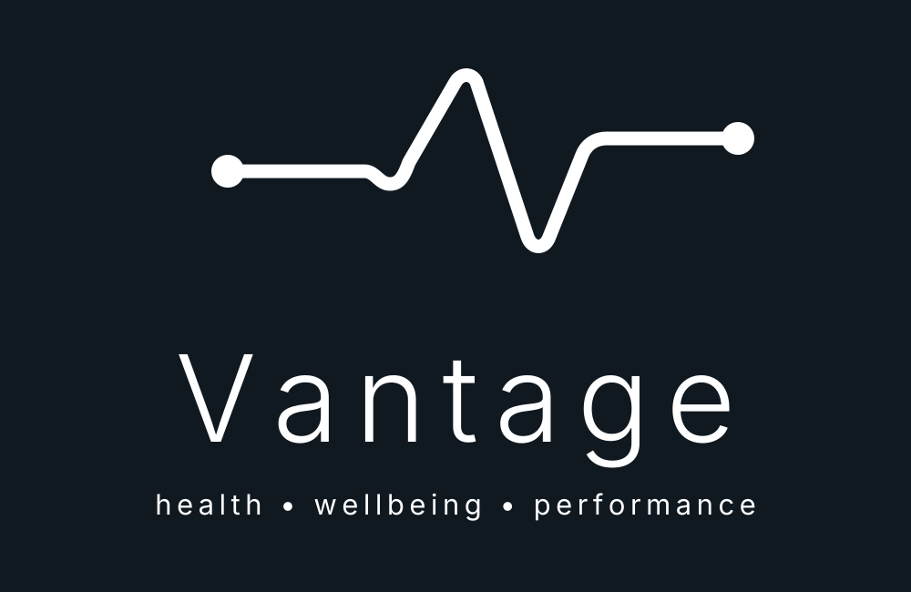

–
Today’s readiness
No reading yet
Log today’s vitals to generate a training recommendation.

Training Console v1.5.6
Today’s readiness
Log today’s vitals to generate a training recommendation.
Next action
Recent activity
Gym mode
Cardio session
Manual session timing
Enter the duration shown by the source you trust. Screenshot durations remain separate and are never used to overwrite this value automatically.
These values are stored against this session. A pre-LISS reading never overwrites the morning vitals record.
Generic fluid, EAAs and electrolytes are hydration/support only unless a calorie-containing drink such as coconut water, juice or dextrose is explicitly recorded.
Enter or confirm only what is visible. Sources remain separate and conflicting calorie, heart-rate, distance and duration values are never averaged.
The raw maximum HR is retained. When marked as artefact, it is excluded from classification and maximum-HR recovery guardrails.
Workout evidence
Use the camera for a machine console or choose screenshots from the camera roll. Only images shown below are included in the Coach Pack. Each image must be assigned to its real source; VANTAGE never defaults a gallery screenshot to a generic watch.
Mixed gallery uploads: VANTAGE asks you to label every selected image before it is saved. Screenshot values remain evidence until a Coach analysis is imported and you confirm them. Use the one-tap review in History to populate all clear image-only values.
Experimental local review
Attach each source separately, confirm its role, then run OCR on that image. Keep the screen straight, fill the frame, avoid glare and keep every label beside its value. OCR suggestions never replace existing values without your confirmation.
Before attaching
Android PWAs cannot force a photo into DCIM/Camera. Use ↗ on an attached image to send it to Photos, Gallery or Files, or ↓ to keep a copy in Downloads. For guaranteed camera-roll redundancy, take the photo in the phone Camera app and then choose it here.
Recovery session
Yoga and mobility are saved as recovery sessions, not fake strength exercises.
Current-session evidence
Add the Yoga/Recovery HR summary. It is always treated as current-session evidence, not a reference image.
Session biometrics
Add the end-of-session HR/effort screenshot from your strap or wearable. It is stored against this workout and included in the full Coach Pack.
Nutrition
Alex macro file
Macro thread bridge
Import a .md file created from your macro thread, or download today’s current food and macro log to send back into that thread.
Quick entry
From the workout journal
Recovery inputs
Preview
The decision updates as you type.
From another Alex thread
Upload a VANTAGE .md file and the app will fill the form below. It will not save anything until you review the readings and press Save vitals.
Decision support only. VANTAGE does not diagnose or replace medical advice. Re-check unusual readings using your normal monitoring process.
Recovery workload
Today
Standing routine
Defaults are plans, not completed actions. Mark each item completed or skipped; manual entries can still modify the duration.
Manual entries
Choose the action, enter the duration in minutes, add any useful context and save it. Sauna, steam and cold exposure remain physiological stressors rather than automatically counting as free recovery.
Today
Recent
VANTAGE BioLab
Local-first import
Generate the structured Markdown in your Bloodwork Analyzer thread, then import it here. VANTAGE stores the original file, issuing-lab units, reference ranges and analysis locally.
Latest panel
Longitudinal view
Archive
Storage and decision support only. VANTAGE does not diagnose, replace the issuing laboratory report or replace GP/TRT-clinic review. Urgent symptoms or seriously abnormal results need professional assessment.
VANTAGE analytics
Analysis window
All calculations use your local VANTAGE history. Warm-ups are excluded from hard-set and hypertrophy-quality metrics.
Estimated 1RM is a model, not a tested maximum. Projection is a simple 28-day linear trend and is hidden when there is too little data.
Effective reps are an estimate, not an exact biological measurement. VANTAGE uses a transparent proximity-to-failure heuristic based on the final five reps near failure. It is useful for trends, not as a verdict on a set.
Association is not causation. This compares nutrition with the selected workout family, so a Back session still matches when one exercise is added or removed. The normalised session score uses the median performance change across exercises with comparable prior history and keeps different machine identities separate where recorded.
This is observational. “Active” periods often overlap with cycle changes, calories, bodyweight and training progression, so the comparison must not be treated as proof that an item caused the result.
VANTAGE can calculate bodyweight-relative strength and your percentile against your own history. It cannot reproduce Hevy’s population percentile without access to Hevy’s private user dataset.
The current PWA uses biometrics already stored in LISS sessions and session timestamps. Direct Health Connect, Wear OS and Apple Health ingestion belongs in the later APK phase.
Cycle context
Current stack
Add or edit
Saved library
Actual administrations
A plan does not mean a dose happened. Record actual administrations here so VANTAGE can correlate them by date without inferring future doses.
Tracking only. VANTAGE does not recommend starting, stopping or changing prescribed medication or TRT. Dose changes belong with the prescribing clinician.
Training archive
Imported and saved history
Multi-device
Local-first controls

health • wellbeing • performance
Local profile foundation for VANTAGE. Existing records are linked to this profile so future small-group/cloud testing can keep each person's data separate.
Cycles control the training block and rotation. Routines control workout days. Exercises opens the full searchable library.
The extension preserves recorded HDM-A, HDM-B and LISS history, adds C/D, builds the six-week schedule from 25 Oct to 6 Dec, and keeps lean-mass activation behind the Maintenance Exit Review.
Flexible programming
A program is the workout rotation used inside a phase. Extend the phase without rebuilding the split, or switch programs when the next phase starts.
Exercise library
Create your own workout day, then add any exercise from the library. Your own custom exercises remain available alongside the built-in catalogue.
Add exercise
Load a VANTAGE Markdown file after the original day has passed. The date inside the file is authoritative, so yesterday’s macros/vitals are stored against yesterday — never today.
Supported: Vitals, daily Macros/Meals, Recovery session and Bloodwork Markdown.
Select VANTAGE_Training_Journal_MobileV3.xlsx. The file is read on this device and is not uploaded anywhere.
Account, device sync, private media and re-bootstrap controls now live on the dedicated Cloud tab.
Create a privacy-controlled Coach Pack containing today’s selected app data, then share or paste it into the VANTAGE Coach thread in this project.
Export every local record as one portable JSON backup.
FTMS Bluetooth code is retained for future diagnostics, but pairing is hidden from normal workouts because the tested gym consoles expose audio/HR-device pairing rather than a usable public workout-data stream. NFC watch-style hand-off is not available to this PWA.
Download flat CSV files shaped for future Google Sheets mapping.
Restore the supplied VANTAGE templates and sample history. Existing local records will be replaced.
Setup reference
ReferenceNo note
Machine identity is kept separate from the movement name so unlike machines are not treated as equal by default.
Keep one active permanent reference for this exercise. Adding a new reference archives the previous active image. Archived references are not exported by default.
Captured photos are stored in VANTAGE. Use ↗ on a saved photo to send it to Photos/Gallery/Files, or ↓ to keep a copy in Downloads.
These images belong only to this workout and are included in the Coach Pack. Confirm the image type and linked exercise before saving.